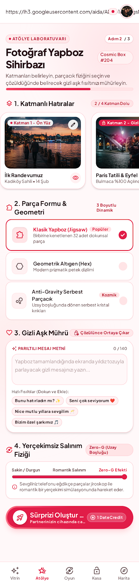
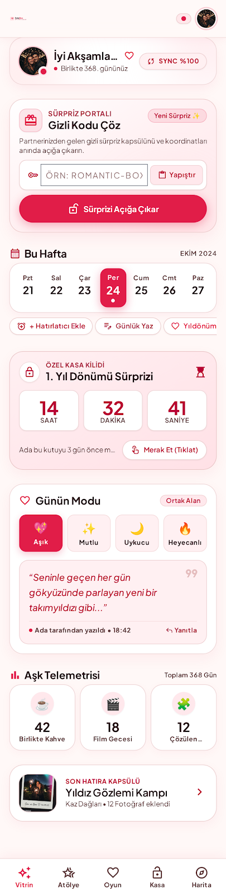
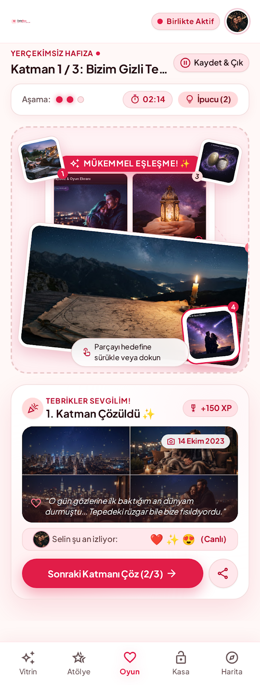
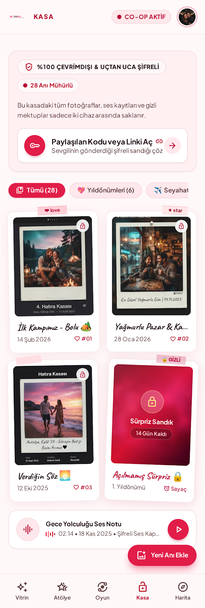
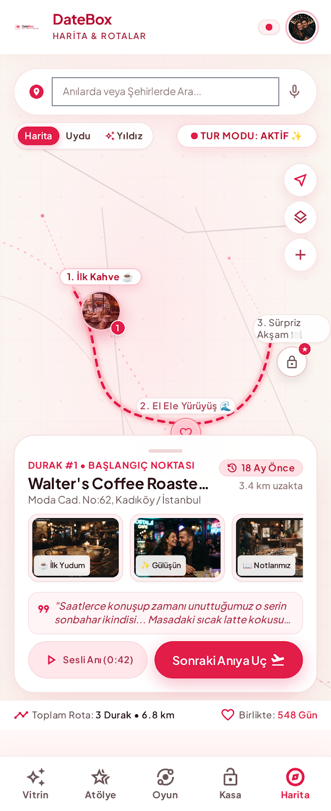

1. Anını seç
Galerinden fotoğraf ekle, kırp, yapboz biçimini ve zorluk seviyesini belirle. İstersen birden fazla fotoğraf katmanı oluştur.
Bir fotoğrafı ve kişisel bir mesajı, sevdiklerine gönderebileceğin etkileşimli bir yapboz sürprizine dönüştür. Alıcı parçaları birleştirerek anıyı ve gizli mesajı açar.
Galerinden fotoğraf ekle, kırp, yapboz biçimini ve zorluk seviyesini belirle. İstersen birden fazla fotoğraf katmanı oluştur.
Kısa bir not yaz. Yapboz tamamlanana kadar sürpriz mesajı alıcı için gizli kalır.
Uygulama tekil oyun bağlantısı üretir. Bağlantıyı mesajlaşma uygulamasıyla gönder; alıcı yapbozu oynayıp anıyı açsın.





Alınan sürprizleri cihazda sakla ve daha sonra yeniden aç.
Özel günleri takip et, anıları tarihleriyle ilişkilendir ve geleceğe not bırak.
Ana yapboz deneyiminin yanında hafıza, quiz ve bahçe simülasyonu gibi anı temalı ekranlar içerir.
Oyun alanı Flame ve Forge2D ile kurulmuş. Parçalar ekranda süzülür; oyuncu onları sürükleyerek merkezdeki yuvalara bırakır. Parça ızgaraya oturduğunda ilerleme sayılır ve tüm parçalar yerleşince anı açılır.
Her yapboz bir kimlik alır ve paylaşılabilir deep link'e bağlanır. Uygulama açılırken gelen bağlantı yönlendirilir; alıcı ilgili sürpriz ekranına gider. Tamamlanan anılar yerel kasaya kaydedilebilir.
floating_memories, uygulamanın proje klasörünün adıdır. Başlangıç ve ekran yönlendirmesi lib/app.dart içinde; fotoğraf seçimi, kırpma ve hediye hazırlama akışı Creator ekranında bulunur. Oyun fiziği ayrı bir Flame oyun sınıfında tutulur.
lib/presentation/screens/creator/Fotoğraf seçme, kırpma, yapboz ayarları, kişisel mesaj ve paylaşım arayüzü.
lib/game/floating_memories_game.dartForge2D dünyası, süzülen parçalar, sürükleme ve yapbozun tamamlanma mantığı.
lib/presentation/screens/player/Paylaşılan sürprizi açan alıcının karşılama ve oyun ekranları.
lib/services/Deep link, yerel anı kasası, görsel parçalama, ses ve abonelik servisleri.